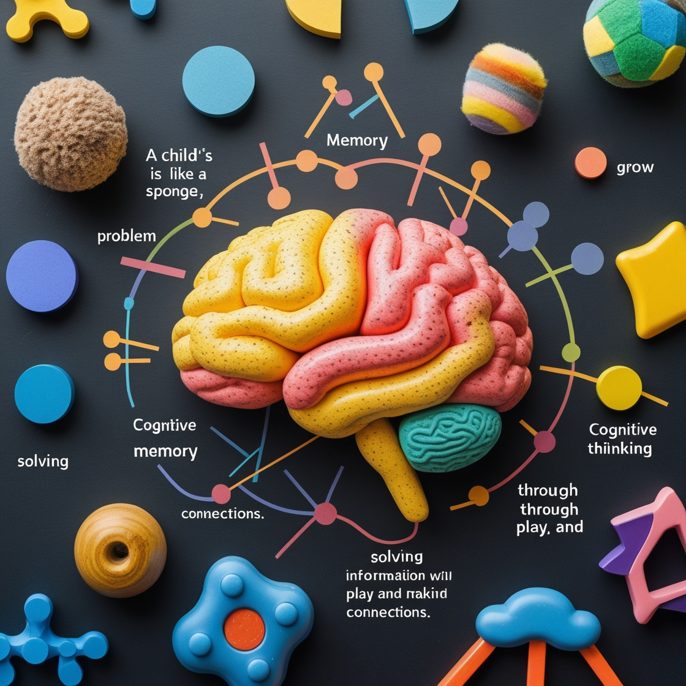

Family, Culture, and Community

The family is a child's first classroom, where culture and community shape their worldview. From bedtime stories to family traditions, these early experiences build a child's sense of identity and belonging.
Did You Know? Children exposed to diverse cultural practices tend to develop stronger empathy and adaptability. Encourage your child to participate in community events or share family stories to foster a sense of connection.
Physical Development

Physical growth is more than just height and weight. Fine motor skills, like holding a pencil, and gross motor skills, like running, are critical for a child's independence and confidence.
Tip: Engage kids in fun activities like dancing or building with blocks to support motor skill development. Outdoor play also boosts physical health and creativity!
Cognitive Development
A child's brain is like a sponge, absorbing information and making connections. Cognitive development includes problem-solving, memory, and critical thinking, which grow through play and exploration.
Fun Fact: Pretend play, like acting out a story, enhances a child's ability to plan and think abstractly. Try setting up a "pretend store" at home to spark their imagination!
Social and Emotional Development
Learning to share, express feelings, and build friendships are key milestones. Emotional regulation starts with understanding their own emotions and recognizing others' feelings.
Activity Idea: Use storybooks to discuss characters' emotions or practice "feelings charades" to help kids name and express their emotions in a playful way.